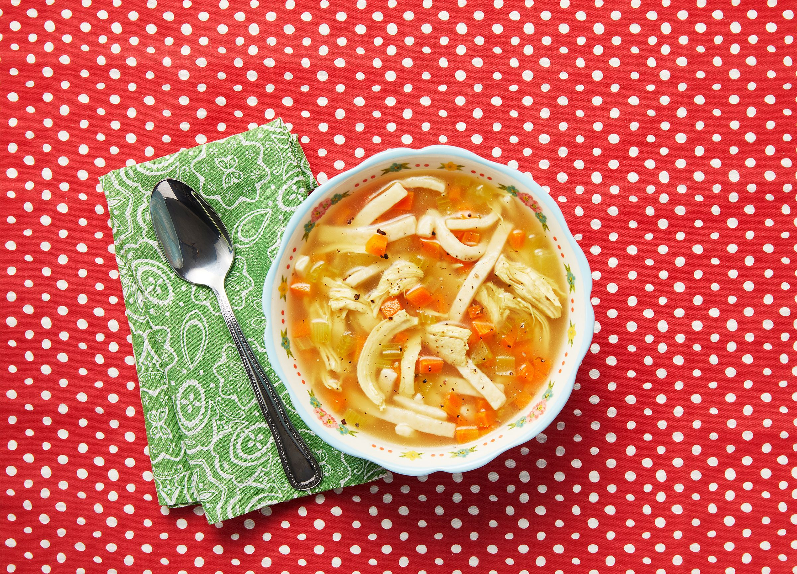

BTS
·
Chicken Noodle Soup (feat. Becky G)
Cher's Noodles Exercise!
HOME
Homemade Chicken and Noodles

Ingredients for 1 serving
1/6 Cut Chicken
1/3 Carrot, diced
1/3 stalk Celery, diced
1/12 Medium Onion, diced
1/8 tablespoon Salt
As needed Ground Turmeric
As needed Ground White Pepper
As needed Ground Thyme
1/4 teaspoon Dried Parsley
2.5oz Frozen Egg Noodles
1/2 tablespoon All-Purpose Flour
Preparation Time:
1 hour 10 minutes
Instructions:
Cover chicken in 4 quarts water. Bring to a boil, then reduce heat to low. Simmer for 30 minutes.
Remove chicken from pot with a slotted spoon. With two forks, remove as much meat from the bones as you can, slightly shredding meat in the process. Return bones to broth and simmer on low, covered, for 45 minutes.
Remove bones from broth with a slotted spoon, making sure to get any small bones that might have detached.
Increase heat and add frozen egg noodles and chicken. Cook for 8 to 10 minutes.
Mix flour and a little water. Stir until smooth. Pour into soup, stir to combine, and simmer for another 5 minutes, or until broth thickens a bit. Test and adjust seasonings as needed.
Alphabetical Order of Recipes
Beef & Onion Soy Sauce Noodles
Homemade Chicken and Noodles
Lemongrass Chicken with Yakisoba Noodles
Sopa De Fideo (Mexican Noodle Soup
Ingredient-Specific Recipes:
Need recipes with specific ingredients? Check these out!
Chicken
Onion